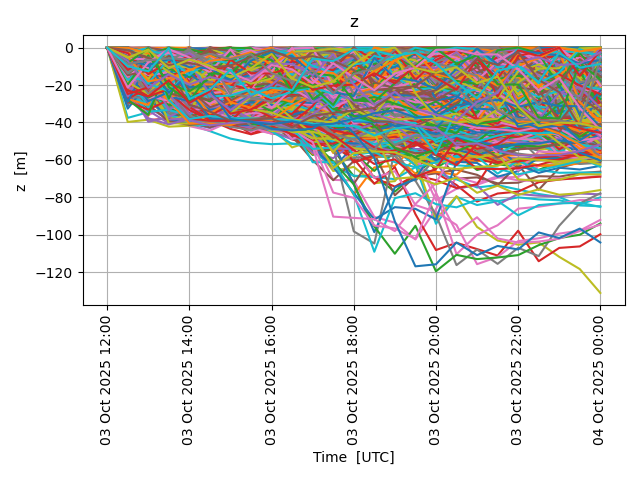
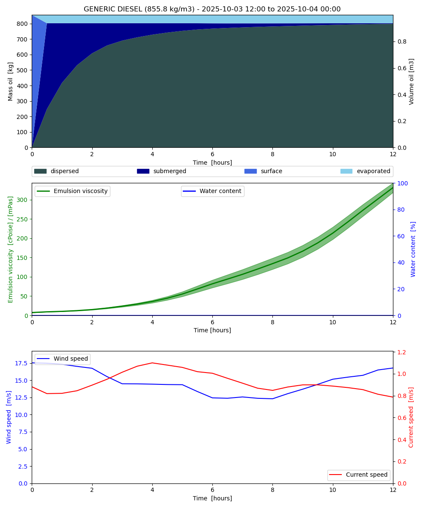

Note
Click here to download the full example code
Oil vertical mixing¶
from datetime import timedelta
from opendrift.readers import reader_netCDF_CF_generic
from opendrift.models.openoil import OpenOil
o = OpenOil(loglevel=20) # Set loglevel to 0 for debug information
ncfile = 'oilmixing.nc'
import_file = False # Set to True to import previous run
if import_file is True:
o.io_import_file(ncfile)
else:
reader_arome = reader_netCDF_CF_generic.Reader('https://thredds.met.no/thredds/dodsC/mepslatest/meps_lagged_6_h_latest_2_5km_latest.nc')
reader_norkyst = reader_netCDF_CF_generic.Reader('https://thredds.met.no/thredds/dodsC/sea/norkyst800m/1h/aggregate_be')
o.add_reader([reader_norkyst, reader_arome])
# Seed oil elements at defined position and time
o.seed_elements(lon=4.9, lat=62.1, z=0, radius=1000, number=2000,
time=reader_arome.start_time)
# Adjusting some configuration
#o.set_config('vertical_mixing:diffusivitymodel', 'windspeed_Sundby1983')
# Running model
o.run(end_time=reader_arome.start_time + timedelta(hours=12),
time_step=900, time_step_output=1800, outfile=ncfile)
Out:
09:33:30 INFO: OpenDriftSimulation initialised (version 1.3.0)
09:33:30 INFO: Opening dataset: https://thredds.met.no/thredds/dodsC/mepslatest/meps_lagged_6_h_latest_2_5km_latest.nc
09:33:30 INFO: Opening file with Dataset
09:33:31 INFO: Could not parse CF grid_mapping
09:33:33 INFO: Opening dataset: https://thredds.met.no/thredds/dodsC/sea/norkyst800m/1h/aggregate_be
09:33:33 INFO: Opening file with Dataset
09:33:39 INFO: Oil type not specified, using default: AASGAR
09:33:39 INFO: Config validation OK
09:33:39 INFO: Fallback values will be used for the following variables which have no readers:
09:33:39 INFO: sea_surface_wave_significant_height: 0.000000
09:33:39 INFO: sea_surface_wave_stokes_drift_x_velocity: 0.000000
09:33:39 INFO: sea_surface_wave_stokes_drift_y_velocity: 0.000000
09:33:39 INFO: sea_surface_wave_period_at_variance_spectral_density_maximum: 0.000000
09:33:39 INFO: sea_surface_wave_mean_period_from_variance_spectral_density_second_frequency_moment: 0.000000
09:33:39 INFO: sea_ice_area_fraction: 0.000000
09:33:39 INFO: sea_ice_x_velocity: 0.000000
09:33:39 INFO: sea_ice_y_velocity: 0.000000
09:33:39 INFO: Adding a dynamical landmask with max. priority based on assumed maximum speed of 1.3 m/s. Adding a customised landmask may be faster...
09:33:43 INFO: Using existing reader for land_binary_mask
09:33:43 INFO: All points are in ocean
09:33:43 INFO: Using default oil-water tension of 0.03Nm
09:33:43 INFO: 2020-07-02 07:00:00 - step 1 of 48 - 2000 active elements (0 deactivated)
09:33:45 INFO: 2020-07-02 07:15:00 - step 2 of 48 - 2000 active elements (0 deactivated)
09:33:46 INFO: Interpolating profiles in time
09:33:47 INFO: 2020-07-02 07:30:00 - step 3 of 48 - 1916 active elements (84 deactivated)
09:33:47 INFO: Interpolating profiles in time
09:33:47 INFO: 2020-07-02 07:45:00 - step 4 of 48 - 1815 active elements (185 deactivated)
09:33:47 INFO: Interpolating profiles in time
09:33:47 INFO: 2020-07-02 08:00:00 - step 5 of 48 - 1703 active elements (297 deactivated)
09:33:47 INFO: 2020-07-02 08:15:00 - step 6 of 48 - 1619 active elements (381 deactivated)
09:33:49 INFO: Interpolating profiles in time
09:33:49 INFO: 2020-07-02 08:30:00 - step 7 of 48 - 1583 active elements (417 deactivated)
09:33:49 INFO: Interpolating profiles in time
09:33:49 INFO: 2020-07-02 08:45:00 - step 8 of 48 - 1564 active elements (436 deactivated)
09:33:49 INFO: Interpolating profiles in time
09:33:49 INFO: 2020-07-02 09:00:00 - step 9 of 48 - 1547 active elements (453 deactivated)
09:33:50 INFO: 2020-07-02 09:15:00 - step 10 of 48 - 1530 active elements (470 deactivated)
09:33:51 WARNING: Invalid values (-0.0011999999 to -0.00029999999) found for ocean_vertical_diffusivity, replacing with NaN
09:33:51 WARNING: (allowed range: [0, 1])
09:33:51 WARNING: Only NaNs input to linearNDFast - returning
09:33:51 INFO: Interpolating profiles in time
09:33:51 INFO: 2020-07-02 09:30:00 - step 11 of 48 - 1513 active elements (487 deactivated)
09:33:51 WARNING: Only NaNs input to linearNDFast - returning
09:33:51 INFO: Interpolating profiles in time
09:33:51 INFO: 2020-07-02 09:45:00 - step 12 of 48 - 1501 active elements (499 deactivated)
09:33:51 WARNING: Only NaNs input to linearNDFast - returning
09:33:51 INFO: Interpolating profiles in time
09:33:52 INFO: 2020-07-02 10:00:00 - step 13 of 48 - 1497 active elements (503 deactivated)
09:33:52 WARNING: Only NaNs input to linearNDFast - returning
09:33:52 INFO: 2020-07-02 10:15:00 - step 14 of 48 - 1484 active elements (516 deactivated)
09:33:53 WARNING: Invalid values (-0.0064 to -0.0033) found for ocean_vertical_diffusivity, replacing with NaN
09:33:53 WARNING: (allowed range: [0, 1])
09:33:53 WARNING: Only NaNs input to linearNDFast - returning
09:33:53 WARNING: Only NaNs input to linearNDFast - returning
09:33:53 INFO: Interpolating profiles in time
09:33:53 INFO: 2020-07-02 10:30:00 - step 15 of 48 - 1474 active elements (526 deactivated)
09:33:53 WARNING: Only NaNs input to linearNDFast - returning
09:33:53 WARNING: Only NaNs input to linearNDFast - returning
09:33:53 INFO: Interpolating profiles in time
09:33:53 INFO: 2020-07-02 10:45:00 - step 16 of 48 - 1469 active elements (531 deactivated)
09:33:53 WARNING: Only NaNs input to linearNDFast - returning
09:33:53 WARNING: Only NaNs input to linearNDFast - returning
09:33:54 INFO: Interpolating profiles in time
09:33:54 INFO: 2020-07-02 11:00:00 - step 17 of 48 - 1460 active elements (540 deactivated)
09:33:54 WARNING: Only NaNs input to linearNDFast - returning
09:33:54 INFO: 2020-07-02 11:15:00 - step 18 of 48 - 1454 active elements (546 deactivated)
09:33:55 WARNING: Invalid values (-0.0098 to -0.0047999998) found for ocean_vertical_diffusivity, replacing with NaN
09:33:55 WARNING: (allowed range: [0, 1])
09:33:55 WARNING: Only NaNs input to linearNDFast - returning
09:33:55 WARNING: Only NaNs input to linearNDFast - returning
09:33:55 INFO: Interpolating profiles in time
09:33:55 INFO: 2020-07-02 11:30:00 - step 19 of 48 - 1441 active elements (559 deactivated)
09:33:55 WARNING: Only NaNs input to linearNDFast - returning
09:33:55 WARNING: Only NaNs input to linearNDFast - returning
09:33:55 INFO: Interpolating profiles in time
09:33:56 INFO: 2020-07-02 11:45:00 - step 20 of 48 - 1426 active elements (574 deactivated)
09:33:56 WARNING: Only NaNs input to linearNDFast - returning
09:33:56 WARNING: Only NaNs input to linearNDFast - returning
09:33:56 INFO: Interpolating profiles in time
09:33:56 INFO: 2020-07-02 12:00:00 - step 21 of 48 - 1421 active elements (579 deactivated)
09:33:56 WARNING: Only NaNs input to linearNDFast - returning
09:33:56 INFO: 2020-07-02 12:15:00 - step 22 of 48 - 1414 active elements (586 deactivated)
09:33:57 WARNING: Invalid values (-0.0112 to -0.0055) found for ocean_vertical_diffusivity, replacing with NaN
09:33:57 WARNING: (allowed range: [0, 1])
09:33:57 WARNING: Only NaNs input to linearNDFast - returning
09:33:57 WARNING: Only NaNs input to linearNDFast - returning
09:33:57 INFO: Interpolating profiles in time
09:33:58 INFO: 2020-07-02 12:30:00 - step 23 of 48 - 1406 active elements (594 deactivated)
09:33:58 WARNING: Only NaNs input to linearNDFast - returning
09:33:58 WARNING: Only NaNs input to linearNDFast - returning
09:33:58 INFO: Interpolating profiles in time
09:33:58 INFO: 2020-07-02 12:45:00 - step 24 of 48 - 1398 active elements (602 deactivated)
09:33:58 WARNING: Only NaNs input to linearNDFast - returning
09:33:58 WARNING: Only NaNs input to linearNDFast - returning
09:33:58 INFO: Interpolating profiles in time
09:33:58 INFO: 2020-07-02 13:00:00 - step 25 of 48 - 1389 active elements (611 deactivated)
09:33:58 WARNING: Only NaNs input to linearNDFast - returning
09:33:58 INFO: 2020-07-02 13:15:00 - step 26 of 48 - 1384 active elements (616 deactivated)
09:33:59 WARNING: Invalid values (-0.0109 to -0.0052) found for ocean_vertical_diffusivity, replacing with NaN
09:33:59 WARNING: (allowed range: [0, 1])
09:33:59 WARNING: Only NaNs input to linearNDFast - returning
09:33:59 WARNING: Only NaNs input to linearNDFast - returning
09:33:59 INFO: Interpolating profiles in time
09:34:00 INFO: 2020-07-02 13:30:00 - step 27 of 48 - 1372 active elements (628 deactivated)
09:34:00 WARNING: Only NaNs input to linearNDFast - returning
09:34:00 WARNING: Only NaNs input to linearNDFast - returning
09:34:00 INFO: Interpolating profiles in time
09:34:00 INFO: 2020-07-02 13:45:00 - step 28 of 48 - 1370 active elements (630 deactivated)
09:34:00 WARNING: Only NaNs input to linearNDFast - returning
09:34:00 WARNING: Only NaNs input to linearNDFast - returning
09:34:00 INFO: Interpolating profiles in time
09:34:00 INFO: 2020-07-02 14:00:00 - step 29 of 48 - 1368 active elements (632 deactivated)
09:34:00 WARNING: Only NaNs input to linearNDFast - returning
09:34:00 INFO: 2020-07-02 14:15:00 - step 30 of 48 - 1367 active elements (633 deactivated)
09:34:01 WARNING: Invalid values (-0.015899999 to -0.0055) found for ocean_vertical_diffusivity, replacing with NaN
09:34:01 WARNING: (allowed range: [0, 1])
09:34:01 WARNING: Only NaNs input to linearNDFast - returning
09:34:01 WARNING: Only NaNs input to linearNDFast - returning
09:34:01 INFO: Interpolating profiles in time
09:34:02 INFO: 2020-07-02 14:30:00 - step 31 of 48 - 1361 active elements (639 deactivated)
09:34:02 WARNING: Only NaNs input to linearNDFast - returning
09:34:02 WARNING: Only NaNs input to linearNDFast - returning
09:34:02 INFO: Interpolating profiles in time
09:34:02 INFO: 2020-07-02 14:45:00 - step 32 of 48 - 1360 active elements (640 deactivated)
09:34:02 WARNING: Only NaNs input to linearNDFast - returning
09:34:02 WARNING: Only NaNs input to linearNDFast - returning
09:34:02 INFO: Interpolating profiles in time
09:34:02 INFO: 2020-07-02 15:00:00 - step 33 of 48 - 1357 active elements (643 deactivated)
09:34:02 WARNING: Only NaNs input to linearNDFast - returning
09:34:02 INFO: 2020-07-02 15:15:00 - step 34 of 48 - 1355 active elements (645 deactivated)
09:34:04 WARNING: Invalid values (-0.0079 to -0.0032) found for ocean_vertical_diffusivity, replacing with NaN
09:34:04 WARNING: (allowed range: [0, 1])
09:34:04 WARNING: Only NaNs input to linearNDFast - returning
09:34:04 WARNING: Only NaNs input to linearNDFast - returning
09:34:04 INFO: Interpolating profiles in time
09:34:04 INFO: 2020-07-02 15:30:00 - step 35 of 48 - 1350 active elements (650 deactivated)
09:34:04 WARNING: Only NaNs input to linearNDFast - returning
09:34:04 WARNING: Only NaNs input to linearNDFast - returning
09:34:04 INFO: Interpolating profiles in time
09:34:04 INFO: 2020-07-02 15:45:00 - step 36 of 48 - 1344 active elements (656 deactivated)
09:34:04 WARNING: Only NaNs input to linearNDFast - returning
09:34:04 WARNING: Only NaNs input to linearNDFast - returning
09:34:04 INFO: Interpolating profiles in time
09:34:04 INFO: 2020-07-02 16:00:00 - step 37 of 48 - 1340 active elements (660 deactivated)
09:34:04 WARNING: Only NaNs input to linearNDFast - returning
09:34:05 INFO: 2020-07-02 16:15:00 - step 38 of 48 - 1336 active elements (664 deactivated)
09:34:06 WARNING: Invalid values (-0.0011 to -1e-04) found for ocean_vertical_diffusivity, replacing with NaN
09:34:06 WARNING: (allowed range: [0, 1])
09:34:06 WARNING: Only NaNs input to linearNDFast - returning
09:34:06 WARNING: Still NaN-values after 10 iterations, exiting!
09:34:06 INFO: Interpolating profiles in time
09:34:07 INFO: 2020-07-02 16:30:00 - step 39 of 48 - 1332 active elements (668 deactivated)
09:34:07 WARNING: Only NaNs input to linearNDFast - returning
09:34:07 INFO: Interpolating profiles in time
09:34:07 INFO: 2020-07-02 16:45:00 - step 40 of 48 - 1328 active elements (672 deactivated)
09:34:07 WARNING: Only NaNs input to linearNDFast - returning
09:34:07 INFO: Interpolating profiles in time
09:34:07 INFO: 2020-07-02 17:00:00 - step 41 of 48 - 1323 active elements (677 deactivated)
09:34:07 INFO: 2020-07-02 17:15:00 - step 42 of 48 - 1313 active elements (687 deactivated)
09:34:08 INFO: Interpolating profiles in time
09:34:09 INFO: 2020-07-02 17:30:00 - step 43 of 48 - 1305 active elements (695 deactivated)
09:34:09 INFO: Interpolating profiles in time
09:34:09 INFO: 2020-07-02 17:45:00 - step 44 of 48 - 1301 active elements (699 deactivated)
09:34:09 INFO: Interpolating profiles in time
09:34:10 INFO: 2020-07-02 18:00:00 - step 45 of 48 - 1298 active elements (702 deactivated)
09:34:10 INFO: 2020-07-02 18:15:00 - step 46 of 48 - 1295 active elements (705 deactivated)
09:34:11 INFO: Interpolating profiles in time
09:34:12 INFO: 2020-07-02 18:30:00 - step 47 of 48 - 1292 active elements (708 deactivated)
09:34:12 INFO: Interpolating profiles in time
09:34:12 INFO: 2020-07-02 18:45:00 - step 48 of 48 - 1290 active elements (710 deactivated)
09:34:12 INFO: Interpolating profiles in time
09:34:12 INFO: Wrote 25 steps to file oilmixing.nc
Print and plot results
print(o)
o.plot(linecolor='z', fast=True)
o.plot_property('z')
o.plot_oil_budget()
o.animation(fast=True)

- 
- 
Out:
===========================
--------------------
Reader performance:
--------------------
https://thredds.met.no/thredds/dodsC/sea/norkyst800m/1h/aggregate_be
0:00:20.2 total
0:00:00.0 preparing
0:00:18.9 reading
0:00:01.1 interpolation
0:00:00.0 interpolation_time
0:00:00.0 masking
--------------------
https://thredds.met.no/thredds/dodsC/mepslatest/meps_lagged_6_h_latest_2_5km_latest.nc
--------------------
global_landmask
0:00:00.6 total
0:00:00.0 preparing
0:00:00.6 reading
0:00:00.0 interpolation_time
0:00:00.0 masking
--------------------
Performance:
43.2 total time
9.4 configuration
4.1 preparing main loop
3.8 making dynamical landmask
0.0 moving elements to ocean
21.4 readers
0.6 global_landmask
0.3 postprocessing
28.7 main loop
20.3 https://thredds.met.no/thredds/dodsC/sea/norkyst800m/1h/aggregate_be
6.6 updating elements
0.0 oil weathering
5.8 vertical mixing
0.9 cleaning up
--------------------
===========================
Model: OpenOil (OpenDrift version 1.3.0)
1270 active Oil particles (730 deactivated, 0 scheduled)
Projection: +proj=stere +ellps=WGS84 +lat_0=90.0 +lat_ts=60.0 +x_0=3192800 +y_0=1784000 +lon_0=70
-------------------
Environment variables:
-----
ocean_vertical_diffusivity
sea_floor_depth_below_sea_level
sea_water_salinity
sea_water_temperature
upward_sea_water_velocity
x_sea_water_velocity
y_sea_water_velocity
1) https://thredds.met.no/thredds/dodsC/sea/norkyst800m/1h/aggregate_be
-----
x_wind
y_wind
1) https://thredds.met.no/thredds/dodsC/sea/norkyst800m/1h/aggregate_be
2) https://thredds.met.no/thredds/dodsC/mepslatest/meps_lagged_6_h_latest_2_5km_latest.nc
-----
land_binary_mask
1) global_landmask
-----
Readers not added for the following variables:
sea_ice_area_fraction
sea_ice_x_velocity
sea_ice_y_velocity
sea_surface_wave_mean_period_from_variance_spectral_density_second_frequency_moment
sea_surface_wave_period_at_variance_spectral_density_maximum
sea_surface_wave_significant_height
sea_surface_wave_stokes_drift_x_velocity
sea_surface_wave_stokes_drift_y_velocity
Time:
Start: 2020-07-02 07:00:00
Present: 2020-07-02 19:00:00
Calculation steps: 48 * 0:15:00 - total time: 12:00:00
Output steps: 25 * 0:30:00
===========================
09:34:13 WARNING: plotting fast. this will make your plots less accurate.
/opt/conda/envs/opendrift/lib/python3.8/site-packages/numpy/ma/core.py:1026: RuntimeWarning: overflow encountered in multiply
result = self.f(da, db, *args, **kwargs)
09:34:37 WARNING: plotting fast. this will make your plots less accurate.
09:34:38 INFO: Saving animation to /root/project/docs/source/gallery/animations/example_oil_verticalmixing_0.gif...
09:34:38 INFO: Making animated gif...
Total running time of the script: ( 1 minutes 36.098 seconds)